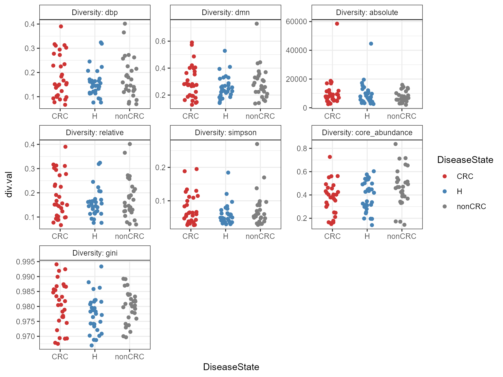
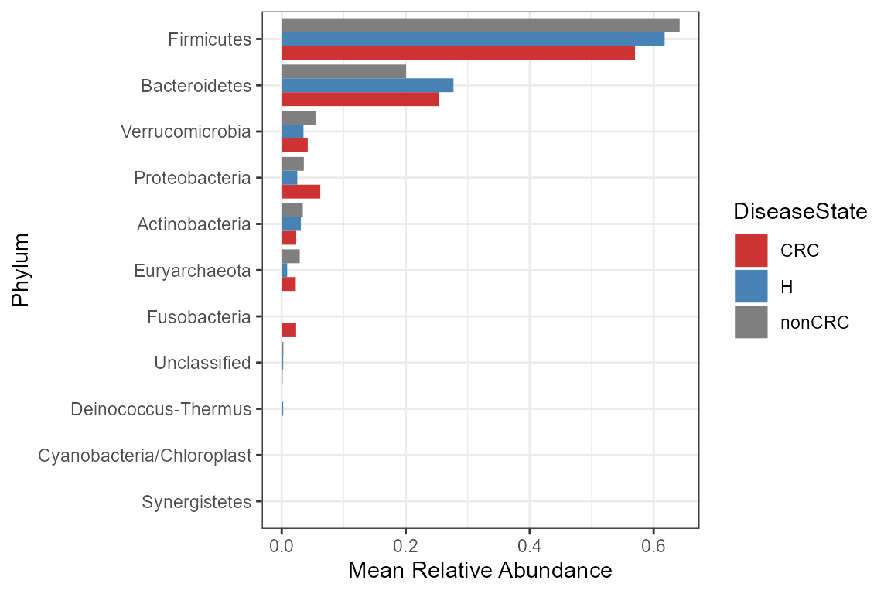
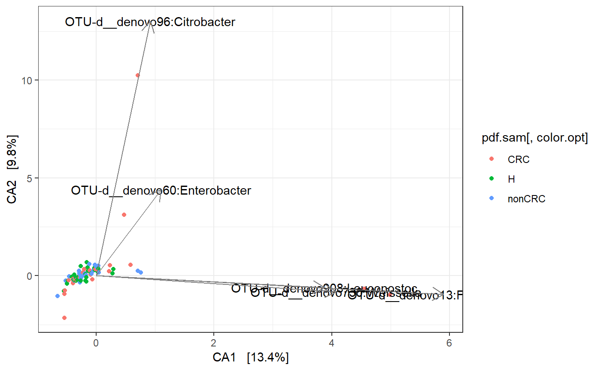
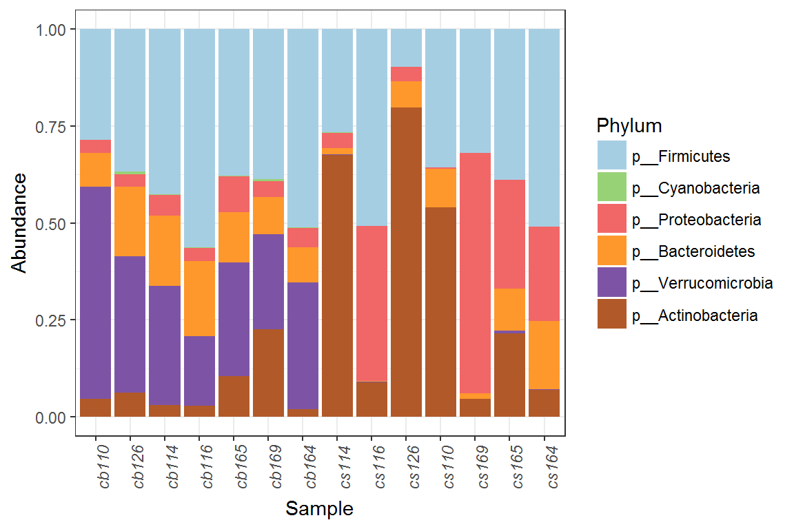
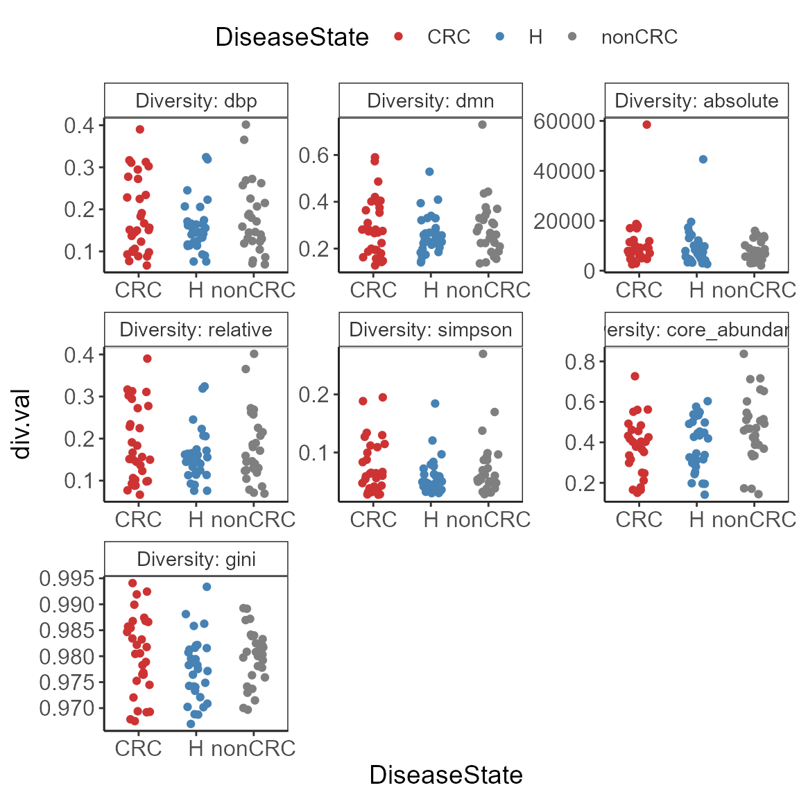
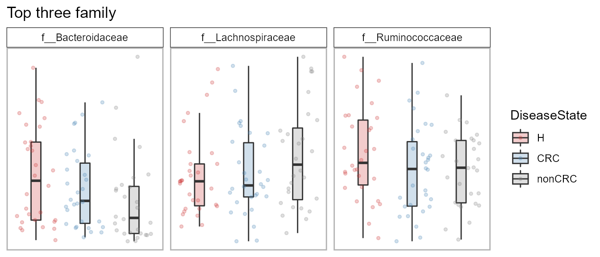
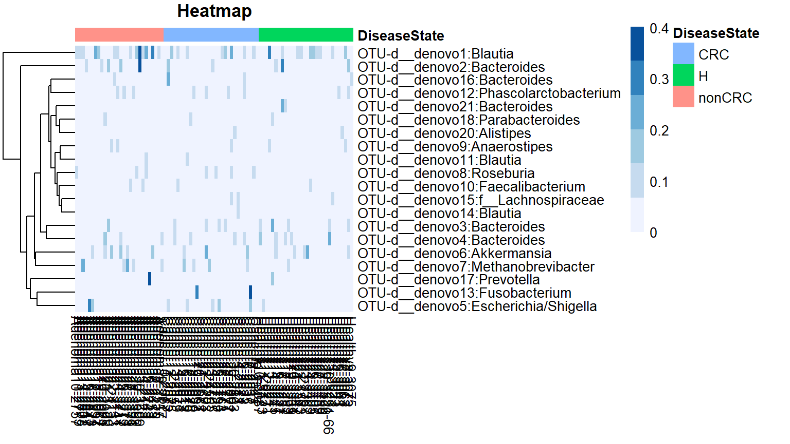

microbiomeutilities.RmdThis package is in experimental stage and should be used only for testing/trial purposes. I will keep improving this with time and feedback.
This is mainly a wrapper tool R package. Apart for some simple scripts for data visualization, this package has a single function called microbiome_pipeline for carrying out preliminary QC, Alpha Diversity, Ordination and Composition analysis of OTU tables. The output is a HTML report for convenient investigating of the data.
install.packages("devtools")
devtools::install_github("microsud/microbiomeutilities")Data from Zackular et al., 2014: The Gut Microbiome Modulates Colon Tumorigenesis.
Useful resources:
For more information on phyloseq data structure and uses you can have a look at Phyloseq
Tools for microbiome analysis in R. Microbiome package URL: microbiome package.
Function microbiome_pipeline generates an HTML report with preliminary QC, Alpha Diversity, Ordination and Composition analysis of OTU tables. This function saves all intermediate files incuding figures and phyloseq objects in user specified directory.
microbiome_pipeline(
otufile = "my.biom",
mapping = "mymap.csv",
taxonomy = NULL,
treefilename = "myTree.tre",
type = "biom",
work_dir = "F:/path/my/input/filefolder",
out_dir = "F:/path/to/save/my/files/folder",
VariableA = "MC_type1",
VariableB = "Region",
UnConstOrd = TRUE,
heatmap = TRUE,
filterCount = 4,
filterPrev = 0.01,
col.palette = "Paired",
filterpseq = TRUE,
samsize = NA,
projectname = "Mock",
author = "Sudarshan"
)Most commonly it is observed that the taxonomy file has classification until a given taxonomic level. We will fill the empty cells with the maximum classification available along with the OTU number.
Check the taxonomy in phyloseq object.
kable(head(tax_table(ps0)))| Domain | Phylum | Class | Order | Family | Genus | Species | |
|---|---|---|---|---|---|---|---|
| d__denovo1773 | k__Bacteria | p__Bacteroidetes | c__Bacteroidia | o__Bacteroidales | f__Bacteroidaceae | g__Bacteroides | s__ |
| d__denovo1771 | k__Bacteria | p__Bacteroidetes | c__Bacteroidia | o__Bacteroidales | f__Bacteroidaceae | g__Bacteroides | s__ |
| d__denovo1776 | k__Bacteria | p__Firmicutes | c__Clostridia | o__Clostridiales | f__Ruminococcaceae | g__ | s__ |
| d__denovo1777 | k__Bacteria | p__Bacteroidetes | c__Bacteroidia | o__Bacteroidales | f__Bacteroidaceae | g__Bacteroides | s__ |
| d__denovo1775 | k__Bacteria | p__Firmicutes | c__Clostridia | o__Clostridiales | f__Lachnospiraceae | g__Blautia | s__ |
| d__denovo2639 | k__Bacteria | p__Bacteroidetes | c__Bacteroidia | o__Bacteroidales | f__Bacteroidaceae | g__Bacteroides | s__ |
Some have only g__ of s__ information.
# reduce size for example
ps0 <- core(ps0, detection = 10, prevalence = 20/100)
ps0.f <- format_phyloseq(ps0)
kable(head(tax_table(ps0.f))[3:6])Now the available taxonomy is added.
There is a second version which will change the names in both otu table and taxonomy table. This can be useful if the analysis has to be done at OTU level. Only ID are less useful.
# reduce size for example
ps0 <- core(ps0, detection = 10, prevalence = 20/100)
ps0.f2 <- format_to_besthit(ps0)
kable(head(tax_table(ps0.f2))[3:6])| Domain | Phylum | Class | Order | Family | Genus | Species | best_hit | |
|---|---|---|---|---|---|---|---|---|
| OTU-d__denovo165:f__Ruminococcaceae | Bacteria | Firmicutes | Clostridia | Clostridiales | Ruminococcaceae | f__Ruminococcaceae | f__Ruminococcaceae | OTU-d__denovo165:f__Ruminococcaceae |
| OTU-d__denovo167:Coprococcus | Bacteria | Firmicutes | Clostridia | Clostridiales | Lachnospiraceae | Coprococcus | g__Coprococcus | OTU-d__denovo167:Coprococcus |
| OTU-d__denovo166:o__Clostridiales | Bacteria | Firmicutes | Clostridia | Clostridiales | o__Clostridiales | o__Clostridiales | o__Clostridiales | OTU-d__denovo166:o__Clostridiales |
| OTU-d__denovo161:Roseburia | Bacteria | Firmicutes | Clostridia | Clostridiales | Lachnospiraceae | Roseburia | g__Roseburia | OTU-d__denovo161:Roseburia |
As can be seen, the rownames have the OTUIDs and available toxonomic name(s).
This can be useful to get an overview of taxonomic classifications. Only patterns such as [g__] or NA is expected. [g__NA.
percent_classified(ps0)
#> Only patterns such as [g__] or similar is expected. [g__<empty>] or [g__unclassified] not considered
#>
#> please convert for eg. g__unclassified to uniform [g__] or NAs
#> Taxonomic_Levels Percent_Classification
#> 1 Domain 99.5 %
#> 2 Phylum 99.5 %
#> 3 Class 99 %
#> 4 Order 99 %
#> 5 Family 97.5 %
#> 6 Genus 80.5 %
#> 7 Species -0.5 %
#> 8 OTUs/ASVs 200
tax_sum <- taxa_summary(ps0, level = "Phylum")
#> Data provided is not compositional
#> will first transform
kable(tax_sum)| Taxa | Max.Rel.Ab | Mean.Rel.Ab | Median.Rel.Ab | Std.dev |
|---|---|---|---|---|
| p__Euryarchaeota | 0.30114063247046 | 0.0274355245134364 | 4.81433454220324e-05 | 0.061342757370339 |
| p__Actinobacteria | 0.239570602807597 | 0.0320558241277642 | 0.0156884949226686 | 0.0415554036141861 |
| p__Bacteroidetes | 0.77520831039166 | 0.243009108261216 | 0.170031595087053 | 0.184741228455718 |
| p__Deinococcus-Thermus | 0.0356312744176846 | 0.00165668166710886 | 0 | 0.00535480262819235 |
| p__Firmicutes | 0.938702718865466 | 0.632215259187888 | 0.634069631401654 | 0.186558659452389 |
| p__Proteobacteria | 0.394890253922297 | 0.0353682325052657 | 0.0113792598497232 | 0.0684708878042132 |
| p__Verrucomicrobia | 0.305658324265506 | 0.0282593697373209 | 0.000100148060027087 | 0.061780449994701 |
Useful for QC purposes. Check for siatribution of sequencing depth.
p <- plot_read_distribution(ps0, groups="DiseaseState", plot.type= "density")
print(p)Useful if the user wants to plot specific features.
# reduce size for example
ps0 <- core(ps0, detection = 10, prevalence = 20/100)
pseq_df <- phy_to_ldf(ps0, transform.counts = NULL)
#> An additonal column Sam_rep with sample names is created for reference purpose
kable(head(pseq_df))| OTUID | Domain | Phylum | Class | Order | Family | Genus | Species | Sam_rep | Abundance | investigation_type | project_name | DiseaseState | age | body_product | FOBT.result | material |
|---|---|---|---|---|---|---|---|---|---|---|---|---|---|---|---|---|
| d__denovo66 | k__Bacteria | p__Firmicutes | c__Clostridia | o__Clostridiales | f__Lachnospiraceae | g__Ruminococcus2 | s__ | Adenoma10-2757 | 27 | metagenomic | The Gut Microbiome Improves Predictive Models for Diagnosis of Colorectal Cancer | nonCRC | 37 | feces | negative | feces |
| d__denovo175 | k__Bacteria | p__Bacteroidetes | c__Bacteroidia | o__Bacteroidales | f__Rikenellaceae | g__Alistipes | s__ | Adenoma10-2757 | 0 | metagenomic | The Gut Microbiome Improves Predictive Models for Diagnosis of Colorectal Cancer | nonCRC | 37 | feces | negative | feces |
| d__denovo165 | k__Bacteria | p__Firmicutes | c__Clostridia | o__Clostridiales | f__Ruminococcaceae | g__ | s__ | Adenoma10-2757 | 49 | metagenomic | The Gut Microbiome Improves Predictive Models for Diagnosis of Colorectal Cancer | nonCRC | 37 | feces | negative | feces |
| d__denovo167 | k__Bacteria | p__Firmicutes | c__Clostridia | o__Clostridiales | f__Lachnospiraceae | g__Coprococcus | s__ | Adenoma10-2757 | 155 | metagenomic | The Gut Microbiome Improves Predictive Models for Diagnosis of Colorectal Cancer | nonCRC | 37 | feces | negative | feces |
| d__denovo166 | k__Bacteria | p__Firmicutes | c__Clostridia | o__Clostridiales | f__ | g__ | s__ | Adenoma10-2757 | 0 | metagenomic | The Gut Microbiome Improves Predictive Models for Diagnosis of Colorectal Cancer | nonCRC | 37 | feces | negative | feces |
| d__denovo161 | k__Bacteria | p__Firmicutes | c__Clostridia | o__Clostridiales | f__Lachnospiraceae | g__Roseburia | s__ | Adenoma10-2757 | 11 | metagenomic | The Gut Microbiome Improves Predictive Models for Diagnosis of Colorectal Cancer | nonCRC | 37 | feces | negative | feces |
Utility plot function for diversity measures calcualted by microbiome package.
library(microbiome)
data("zackular2014")
ps0 <- zackular2014
ps0 <- core(ps0, detection = 2, prevalence = 20/100)
p <- plot_alpha_diversities(ps0,
type = "diversities",
index.val = "all",
plot.type = "stripchart",
variableA = "DiseaseState",
palette = "jco")
print(p)
library(microbiomeutilities)
library(RColorBrewer)
data("zackular2014")
p0 <- zackular2014
ps1 <- format_to_besthit(p0)
ps1 <- subset_samples(ps1, DiseaseState == "H")
ps1 <- prune_taxa(taxa_sums(ps1) > 0, ps1)
prev.thres <- seq(.05, 1, .05)
det.thres <- 10^seq(log10(1e-4), log10(.2), length = 10)
pseq.rel <- microbiome::transform(ps1, "compositional")
# reduce size for example
pseq.rel <- core(pseq.rel, detection = 0.001, prevalence = 20/100)
ord.bray <- ordinate(pseq.rel, "NMDS", "bray")
#> Run 0 stress 0.1925851
#> Run 1 stress 0.2480169
#> Run 2 stress 0.2128403
#> Run 3 stress 0.249104
#> Run 4 stress 0.2382931
#> Run 5 stress 0.1985553
#> Run 6 stress 0.205819
#> Run 7 stress 0.2042817
#> Run 8 stress 0.2167662
#> Run 9 stress 0.1980402
#> Run 10 stress 0.2235846
#> Run 11 stress 0.2047694
#> Run 12 stress 0.2562018
#> Run 13 stress 0.1955604
#> Run 14 stress 0.2288775
#> Run 15 stress 0.1955387
#> Run 16 stress 0.2461613
#> Run 17 stress 0.2314738
#> Run 18 stress 0.2412755
#> Run 19 stress 0.2497893
#> Run 20 stress 0.1985549
#> *** No convergence -- monoMDS stopping criteria:
#> 20: stress ratio > sratmax
p <- plot_ordiplot_core(pseq.rel, ord.bray,
prev.thres, det.thres, min.prevalence = 0.9,
color.opt = "DiseaseState", shape = NULL, Sample = TRUE)
#> Caution: Convergence was not reached in the ordination object provided
print(p)
This functions is a utility function which depend on vegan and phyloseq. Given a phyloseq object and ordination object, it will plot species loadings with high variation.
# library(microbiomeutilities)
data("zackular2014")
ps1 <- zackular2014
ps2 <- tax_glom(ps1, "Genus")
ps2f <- format_to_besthit(ps2)
orddi <- ordinate(ps2f, method = "CCA", distance = "bray")
p <- plot_ordination_utils(ps2f, orddi,
color="DiseaseState",
plot.arrow = TRUE,
scale.arrow = 1.3, top.taxa = 5)
print(p)
ps.f2 <- format_to_besthit(ps0)
psf2.rel <- microbiome::transform(ps.f2, "compositional")
otu <- abundances(psf2.rel)
meta <- meta(psf2.rel)
library(vegan)
#> Warning: package 'vegan' was built under R version 3.5.2
#> Loading required package: permute
#> Loading required package: lattice
#> This is vegan 2.5-3
#>
#> Attaching package: 'vegan'
#> The following object is masked from 'package:microbiome':
#>
#> diversity
permanova <- adonis(t(otu) ~ DiseaseState,
data = meta, permutations=99, method = "bray")
# P-value
print(as.data.frame(permanova$aov.tab)["group", "Pr(>F)"])
#> [1] NA
coef <- coefficients(permanova)["DiseaseState1",]
top.coef <- coef[rev(order(abs(coef)))[1:3]]
top.coef.df <- as.data.frame(top.coef)
my_taxa <- c(rownames(top.coef.df))
p <- plot_select_taxa(psf2.rel, my_taxa, "DiseaseState", "Paired", plot.type = "boxplot")
#> An additonal column Sam_rep with sample names is created for reference purpose
print(p)
Plot relative abundance of top taxa specified by user.
pn <- plot_taxa_boxplot(ps0,
taxonomic.level = "Phylum",
top.otu = 5, VariableA = "DiseaseState",
title = "Relative abudance plot", color = "Set2")
#> The phy_tree slot is empty, easy to make the plot
print(pn)
library(RColorBrewer)
library(dplyr)
#> Warning: package 'dplyr' was built under R version 3.5.2
#>
#> Attaching package: 'dplyr'
#> The following objects are masked from 'package:stats':
#>
#> filter, lag
#> The following objects are masked from 'package:base':
#>
#> intersect, setdiff, setequal, union
# reduce data for egample purposes
ps.cor <- core(ps0, detection = 10, prevalence = 0.5)
p <- plot_taxa_composition(ps.cor, taxonomic.level = "Phylum", transform = "compositional",
average_by = NULL,
palette = brewer.pal(9,"Paired"))
print(p)
Useful for visualisng differences in top otus between sample groups.
heat.sample <- plot_taxa_heatmap(ps0, subset.top = 20,
VariableA = "DiseaseState",
heatcolors =brewer.pal(6, "Blues"),
transformation = "compositional")
#> Top 20 OTUs selected
#> First converted to compositional
#> then top taxa were selected
We provide access to a subset of studies included in the MicrobiomeHD database from Duvallet et al 2017: Meta-analysis of gut microbiome studies identifies disease-specific and shared responses. Nature communications.
The phyloseq objects are stored and accessed from microbiomedatarepo.
study <- list_microbiome_data(printtab = FALSE)
knitr::kable(study)| Study | Disease |
|---|---|
| Son2015_ASD | ASD |
| Kang2013_ASD | ASD |
| Schubert2014_CDI | CDI |
| Youngster2014_CDI | CDI |
| Baxter2016_CRC | CRC |
| Zackular2014_CRC | CRC |
| Zeller2014_CRC | CRC |
| Singh2015_EDD | EDD |
| NogueraJulian2016_HIV | HIV |
| Dinh2015_HIV | HIV |
| Lozupone2013_HIV | HIV |
| Gevers2014_IBD | IBD |
| Zhang2013_LIV | LIV |
| Wong2013_NASH | NASH |
| Ross2015_OB | OB |
| Zupancic2012_OB | OB |
| Scher2013_PAR | PAR |
| Alkanani2015_T1D | T1D |
| Scheperjans2015_PAR | PAR |
| Alkanani2015_T1D | T1D |
Below is the per study reference.
NOTE: When using these studies, please cite Duvallet et al. 2017 and the respective studies.
file <- system.file("extdata", "microbiomeHD_ref.txt", package="microbiomeutilities")
reference <- read.table(file, header = T, sep = "\t")
knitr::kable(reference)For more tutorials and examples of data anlaysis in R please check:
sessionInfo()
#> R version 3.5.0 Patched (2018-04-23 r74633)
#> Platform: x86_64-w64-mingw32/x64 (64-bit)
#> Running under: Windows 7 x64 (build 7601) Service Pack 1
#>
#> Matrix products: default
#>
#> locale:
#> [1] LC_COLLATE=Dutch_Netherlands.1252 LC_CTYPE=Dutch_Netherlands.1252
#> [3] LC_MONETARY=Dutch_Netherlands.1252 LC_NUMERIC=C
#> [5] LC_TIME=Dutch_Netherlands.1252
#>
#> attached base packages:
#> [1] stats graphics grDevices utils datasets methods base
#>
#> other attached packages:
#> [1] dplyr_0.7.8 vegan_2.5-3
#> [3] lattice_0.20-35 permute_0.9-4
#> [5] RColorBrewer_1.1-2 bindrcpp_0.2.2
#> [7] tibble_1.4.2 knitr_1.20
#> [9] microbiomeutilities_0.99.0 microbiome_1.5.27
#> [11] ggplot2_3.1.0 phyloseq_1.24.2
#>
#> loaded via a namespace (and not attached):
#> [1] viridis_0.5.1 Biobase_2.39.2 tidyr_0.8.2
#> [4] viridisLite_0.3.0 jsonlite_1.5 splines_3.5.0
#> [7] foreach_1.4.4 assertthat_0.2.0 highr_0.6
#> [10] stats4_3.5.0 ggrepel_0.7.0 yaml_2.1.18
#> [13] pillar_1.2.1 backports_1.1.2 glue_1.3.0
#> [16] digest_0.6.15 XVector_0.19.9 colorspace_1.3-2
#> [19] cowplot_0.9.2 htmltools_0.3.6 Matrix_1.2-14
#> [22] plyr_1.8.4 pkgconfig_2.0.1 pheatmap_1.0.8
#> [25] zlibbioc_1.25.0 purrr_0.2.4 scales_1.0.0
#> [28] Rtsne_0.15 mgcv_1.8-23 IRanges_2.13.28
#> [31] ggpubr_0.1.6 withr_2.1.2 BiocGenerics_0.25.3
#> [34] lazyeval_0.2.1 survival_2.42-3 magrittr_1.5
#> [37] crayon_1.3.4 memoise_1.1.0 evaluate_0.10.1
#> [40] fs_1.2.6 nlme_3.1-137 MASS_7.3-49
#> [43] xml2_1.2.0 tools_3.5.0 data.table_1.12.0
#> [46] stringr_1.3.0 Rhdf5lib_1.1.6 S4Vectors_0.17.42
#> [49] munsell_0.5.0 ggsci_2.8 cluster_2.0.7-1
#> [52] Biostrings_2.47.12 ade4_1.7-11 compiler_3.5.0
#> [55] pkgdown_1.3.0 rlang_0.3.1 rhdf5_2.23.8
#> [58] grid_3.5.0 iterators_1.0.9 biomformat_1.7.0
#> [61] rstudioapi_0.7 igraph_1.2.1 labeling_0.3
#> [64] rmarkdown_1.9 gtable_0.2.0 codetools_0.2-15
#> [67] multtest_2.35.0 roxygen2_6.1.1 reshape2_1.4.3
#> [70] R6_2.2.2 gridExtra_2.3 bindr_0.1.1
#> [73] commonmark_1.7 rprojroot_1.3-2 desc_1.2.0
#> [76] ape_5.1 stringi_1.1.7 parallel_3.5.0
#> [79] Rcpp_1.0.0 tidyselect_0.2.5